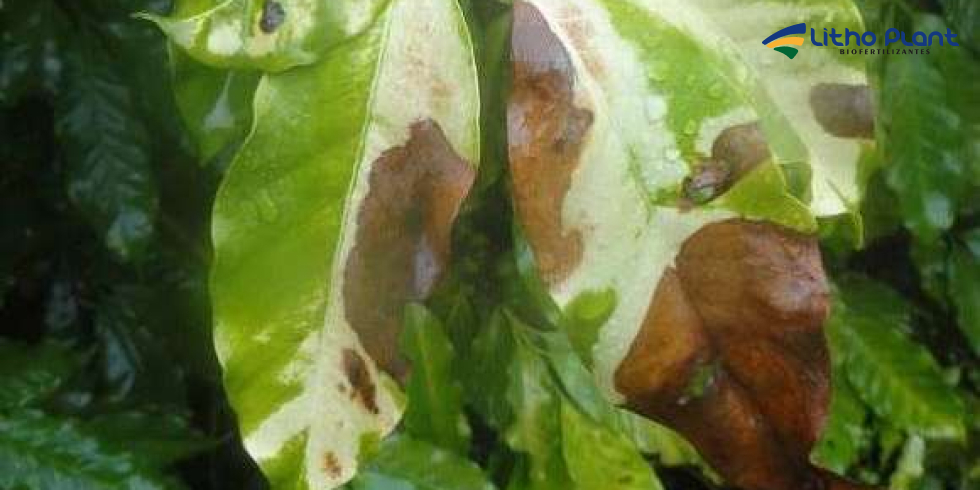
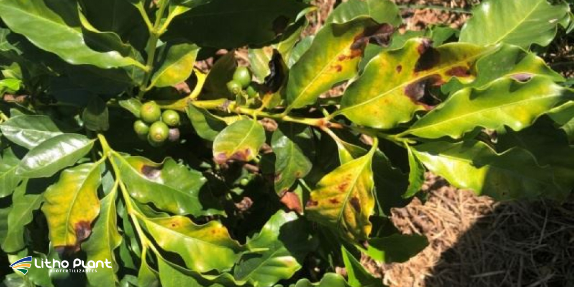

Escaldadura nas Plantas: Como Evitar Esse Problema?
 Exposição excessiva ao sol e altas temperaturas podem causar escaldadura e grandes perdas na produção.
Exposição excessiva ao sol e altas temperaturas podem causar escaldadura e grandes perdas na produção.
Na Litho Plant, indústria de biofertilizantes em Linhares, estamos comprometidos em fornecer soluções inovadoras para os desafios enfrentados pelos agricultores.
Sabemos que a saúde e a produtividade das plantas são cruciais para o sucesso de qualquer lavoura, e a escaldadura é um problema que pode causar grandes prejuízos.
A escaldadura, que ocorre devido à exposição excessiva ao sol e ao calor intenso, pode prejudicar severamente a qualidade e a quantidade da produção agrícola.
Este artigo explica o que é a escaldadura, suas principais causas e como evitá-la utilizando biofertilizantes, protetores solares específicos para plantas e outras técnicas de manejo.
Continue lendo para descobrir como proteger suas culturas da escaldadura e melhorar seus resultados com as soluções da Litho Plant.
O que é escaldadura?
A escaldadura é um dano fisiológico que ocorre nas plantas devido à exposição excessiva ao sol e ao calor intenso.
O problema é comum em diversas culturas, especialmente durante os meses mais quentes do ano, quando as temperaturas e a radiação solar são mais elevadas.
Sintomas da escaldadura
Os sintomas incluem manchas brancas ou amareladas em folhas, frutos e caules, que podem evoluir para necrose (morte do tecido).
As plantas afetadas podem apresentar murcha, queda prematura de frutos e redução significativa na qualidade e na quantidade da colheita.
Causas da escaldadura
A escaldadura é causada pela combinação de alta radiação solar, temperaturas elevadas e baixa disponibilidade de água.
Plantas em estresse hídrico são mais suscetíveis, pois têm mais dificuldade em manter a temperatura interna adequada e o equilíbrio hídrico.

Manchas claras, murcha e necrose em folhas e frutos são sinais clássicos de escaldadura.Estratégias para evitar a escaldadura
Para evitar a escaldadura, é importante adotar práticas de manejo que ajudem a proteger as plantas do excesso de calor e radiação solar.
Uso de biofertilizantes
Os biofertilizantes podem desempenhar papel importante na prevenção da escaldadura, pois melhoram a saúde geral das plantas e aumentam a resistência a condições ambientais adversas.
Benefícios dos biofertilizantes
Biofertilizantes fornecem nutrientes essenciais e microrganismos benéficos que fortalecem o sistema fisiológico das plantas, tornando-as mais resilientes ao estresse térmico e hídrico.
Estudos de instituições como a Embrapa mostram que o uso de biofertilizantes ajuda as plantas a suportarem melhor situações de calor extremo, mantendo maior eficiência fotossintética.
Produtos Litho Plant
A Litho Plant oferece uma linha completa de biofertilizantes formulados para melhorar a saúde das plantas e aumentar sua resistência ao estresse, favorecendo raízes ativas, microbioma equilibrado e maior vigor vegetativo.
Aplicação de protetores solares para plantas
O uso de protetores solares específicos para plantas é uma técnica eficaz para prevenir a escaldadura.
Esses produtos formam uma barreira protetora que reflete parte da radiação solar e ajuda a reduzir a temperatura da superfície de folhas e frutos.
Protetor solar para plantas
Protetores solares para plantas são formulados com ingredientes que auxiliam na reflexão da radiação solar, contribuindo para manter a temperatura interna das plantas em níveis mais seguros.
Trabalhos conduzidos em universidades como a UFLA apontam que o uso de protetores solares pode reduzir significativamente a incidência de escaldadura em culturas sensíveis ao calor.
Sombryt
Sombryt é um protetor solar para plantas amplamente utilizado em diferentes culturas, desenvolvido pela Litho Plant.
Ele forma uma película protetora nas folhas e frutos, ajudando a refletir parte da radiação solar, reduzir a temperatura da planta e diminuir a queima de tecidos.
A aplicação de Sombryt pode ser feita periodicamente durante os meses mais quentes, garantindo proteção contínua contra a escaldadura e favorecendo melhor qualidade de frutos. [web:502]

Sombryt atua como protetor solar, oferecendo conforto térmico e reduzindo danos por escaldadura em folhas e frutos. [web:502]Técnicas de sombreamento
O sombreamento é outra estratégia eficaz para proteger as plantas da escaldadura e pode ser adotado de diferentes formas.
Telas de sombreamento
Telas de sombreamento podem ser instaladas sobre as plantas para reduzir a incidência direta de radiação solar em folhas e frutos.
Essa técnica é bastante utilizada em estufas, hortas e viveiros, onde o ambiente de cultivo pode ser controlado com mais precisão.
Plantio de árvores de sombra
O plantio de árvores de sombra ao redor da lavoura é prática tradicional que continua eficiente para reduzir temperatura ambiente e proteger culturas mais sensíveis.
Árvores distribuídas em áreas estratégicas ajudam a amenizar o microclima e diminuir a intensidade da radiação direta em determinados horários do dia.
Manejo da irrigação
A irrigação adequada é essencial para manter as plantas hidratadas e reduzir o risco de escaldadura. Plantas sob estresse hídrico tornam-se mais vulneráveis ao calor intenso.
Irrigação por gotejamento
A irrigação por gotejamento é uma técnica eficiente que leva água diretamente às raízes, reduzindo perdas por evaporação e ajudando a manter umidade adequada no solo.
Estudos de instituições como a UFV indicam que o gotejamento melhora o uso da água e ajuda a reduzir o estresse hídrico, favorecendo maior resistência das plantas à escaldadura.
Monitoramento da umidade do solo
Monitorar regularmente a umidade do solo é importante para ajustar as lâminas de irrigação conforme a necessidade.
Sensores de umidade e acompanhamento visual auxiliam na definição do momento ideal para irrigar, garantindo que as plantas recebam água suficiente nos períodos de maior demanda.
Produtos e soluções Litho Plant
Biofertilizantes Litho Plant
Os biofertilizantes Litho Plant são formulados para melhorar a saúde das plantas e aumentar a resistência ao estresse térmico e hídrico.
Eles fornecem nutrientes e microrganismos benéficos que fortalecem o sistema radicular, o microbioma do solo e o equilíbrio nutricional, fatores fundamentais para enfrentar períodos de calor intenso.
Protetor solar Sombryt
Sombryt é um protetor solar eficaz que ajuda a proteger as plantas da radiação solar excessiva, reduzindo a temperatura da superfície de folhas e frutos e diminuindo a ocorrência de escaldadura. [web:502]
O produto também contribui para manter a fotossíntese em níveis adequados durante períodos de estresse térmico, favorecendo a qualidade final da colheita. [web:502]
Consultoria agronômica
A Litho Plant oferece consultoria agronômica personalizada para apoiar produtores na implementação das melhores práticas de manejo contra a escaldadura.
Especialistas da empresa auxiliam na escolha dos produtos, definição de doses, épocas de aplicação e integração das soluções no manejo diário da lavoura.
Conclusão
A escaldadura nas plantas é um problema sério que pode comprometer produtividade e qualidade da colheita, mas pode ser controlado com manejo adequado e uso de tecnologias específicas.
Combinando biofertilizantes, protetores solares para plantas como o Sombryt e boas práticas de sombreamento e irrigação, é possível reduzir significativamente os danos causados pelo excesso de sol.
Na Litho Plant, o compromisso é oferecer soluções completas para os desafios do campo, ajudando produtores a proteger suas plantas da escaldadura e a manter lavouras mais saudáveis e produtivas.
Entre em contato com a equipe Litho Plant para saber mais sobre os produtos e serviços disponíveis e construir um plano de manejo adaptado à realidade da sua propriedade.